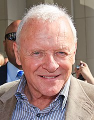

|

|
Anthony Hopkin
Zawód: aktor, kompozytor, artysta malarz
Anthony Hopkins, właśc. sir Philip Anthony Hopkins, CBE (ur. 31 grudnia 1937 w Port Talbot) – walijski aktor teatralny, filmowy i telewizyjny, a także kompozytor i artysta malarz, mający podwójne obywatelstwo
amerykańsko-brytyjskie.
Uważany jest za jednego z najwybitniejszych aktorów współczesnych, potrafiącego zagrać role w szerokim spektrum gatunków filmowych i teatralnych. Dwukrotny laureat Oscara dla najlepszego aktora pierwszoplanowego (1992, 2021), trzech nagród
BAFTA,
dwóch nagród Emmy i Nagrody im. Cecila B. DeMille’a. 1 stycznia 1993 został uhonorowany Odznaką Rycerza Kawalera przez królową brytyjską Elżbietę II. W 2003 otrzymał gwiazdę na Alei Gwiazd w Los Angeles. W 2008 zdobył BAFTA Fellowship,
przyznawaną
przez Brytyjską Akademię Sztuk Filmowych i Telewizyjnych. Początkowo jego aktorska kariera zawodowa opierała się wyłącznie na rolach teatralnych. W późniejszym okresie skupił się na aktorstwie filmowym[1].
|